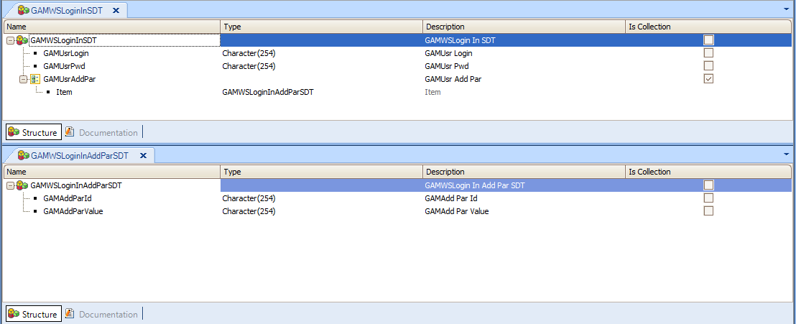

External Authentication Type with GAM can be defined using a SOAP web service or an external program.
In case of using a Web Service (SOAP) it must meet certain requirements in order to be used as External Web Services Authentication Type:
Type GAMWSLoginInSDT : in parameter Type GAMWSLoginOutSDT: out parameter
In case of the Custom Authentication Type, the same data types should be used, except that in this case they are passed to the program as strings in json format.
| Name | Description | Type |
| GAMUsrLogin | User identification login | String |
| GAMUsrPwd | User Password | String |
| GAMUsrAddPar | Collection of additional parameters | GAMWSLoginInAddParSDT (Collection) |
| Name | Description | Type |
| GAMAddParId | Additional parameter identifier | String |
| GAMAddParValue | Additional parameter value | String |

| Name | Description | Type |
| WSVersion | web service version (1.0) | String |
| WSStatus |
Response status: |
Short |
| WSMessage | Custom message when the user tries to authenticate | String |
| User | Information of the connected user | GAMWSLoginOutUserSDT |
Note: WSStatus can be any other value than 1 to 4. Numbers above 4 correspond to custom messages. In that case, the string value in WSMessage will be shown to the user when he tries to login.
| Name | Description | Type | |
| Code | User identifier | String | |
| FirstName | User first name | String | |
| LastName | User last name | String | |
| User email | String | ||
| Roles | User roles list | Collection of RoleItem | RoleItem has RoleCode (String) child. |
Note: The Code (*) of the user will be mapped to the ExternalId property of GAMUser object when the user registers to the application.
<GAMWSLoginOutSDT xmlns="GAM">
<WSVersion>1.0</WSVersion>
<WSStatus>1</WSStatus>
<WSMessage />
<User>
<Code>500</Code>
<FirstName>Juan</FirstName>
<LastName>Perez</LastName>
<EMail>jperez@gxportal.com</EMail>
<Roles>
<GAMWSLoginOutUserSDT.RoleItem>
<RoleCode>4</RoleCode>
</GAMWSLoginOutUserSDT.RoleItem>
<GAMWSLoginOutUserSDT.RoleItem>
<RoleCode>10</RoleCode>
</GAMWSLoginOutUserSDT.RoleItem>
<GAMWSLoginOutUserSDT.RoleItem>
<RoleCode>15</RoleCode>
</GAMWSLoginOutUserSDT.RoleItem>
</Roles>
</User>
</GAMWSLoginOutSDT>
GAM - External Authentication: version 2.0